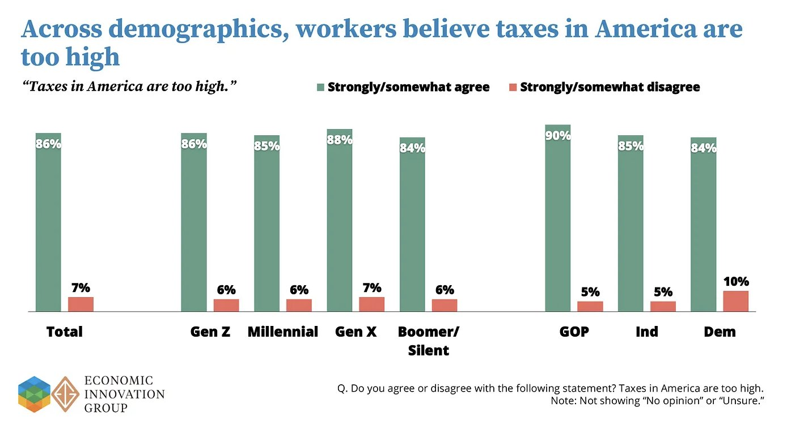

WEEKLY REMINDERS/ANNOUNCEMENTS – EWOT, Week 8
Readings and Topics this Week: You can finish up the materials on our economic history, we will be moving onto Basic Principles in another week.
Recitation:. We will be offering academic experiences/lessons in some of the recitation slots. Any and all students are encouraged to attend. Look for details from the TA staff.
Weekly AssignmentS: Your money in politics assignment is due this Sunday, hot on the heels of a lot of news regarding money in politics – including … from … politicians themselves. The week 8 assignment is also posted but to do that you would have had to attend the public screening of American Graffiti. If you did not attend, you must use an exemption. I have also just posted the Week 9 assignment, due November 1st.
Exam: I handed out exams in person last Friday in class. If you chose not to come to class, you need to connect with your TA to determine a time/place to locate it. If you did not put your TA name on your exam, that will make it harder for us to track down.
My Availability
I will not be available until Sunday evening. Call Alexa or Katherine if there is a serious issue, and they will route communication to me. Feel free during the week to call or text.
Check out Rochester events, office hour times and locations, department information, and up to date news and job opportunities (as they come to me) visit us at tiny.cc/RizzoHours. I update my calendar weekly on that page, and include other sometimes useful information on it for you.
This Week at Rochester
https://rochesterrizzo.github.io/Rizzo-Hours/this-week-at-rochester/
STAFF PICKS
Friday · Ideas worth building The Heist: AI Hackathon Kickoff
2–4 PM · Schlegel 107. Teams build ideas at the intersection of AI, sustainability, MedTech and entrepreneurship.
Friday · Arts & ideas Musical Wonderlands
5 PM · Humanities Center. Can a touch screen make music-making effortless, and what gets lost?
Saturday · Home sports Three swimming matchups at noon
Canisius faces both Rochester squads, Siena faces the women; Speegle-Wilbraham Aquatics Center.
Monday · New music OSSIA + Eastman Wind Orchestra
Two FREE 7:30 PM concerts, in Kilbourn and Kodak Hall respectively.
Tuesday · The wonderfully obsolete Obsolete Press: analog printmaking
Noon pop-up and 5:30 PM archive conversation; zines, mimeographs and discarded technologies.
Wednesday · AI & energy AI and the Reinvention of Energy
12:30 PM · Wegmans 1400. Accenture's global energy lead on an industry being remade.
Wednesday · AI & humanities The Humanistic Epistemology of AI
5 PM · Humanities Center. Laurent Dubreuil interrogates the linguistic assumptions beneath LLMs
Upcoming Special Events
The Politics and Markets Project, Moderated Panel Discussion Hosted by Professor David Primo
Title: AI and privacy (both thinking about government regulation and things like surveillance pricing, or, getting good deals!)
Date: Wednesday, November 4th
Time: 7:30pm to 8:30pm
Location: Wegmans Hall, 1400.
More Info on the PMP: Follow on Instagram
Department of Economics PIZZA and PAYOFFS Special Event

Title: Pizza and Payoffs: Everything you wanted to know about the Econ major — courses, careers, and what you can actually do with an economics degree.
Who: Professor Lisa Kahn and special guest Chris Nosko
Date: Monday, November 9
Time: 5:30pm to 7:00pm
Location: TBD
More Info: Chris Nosko is the head economist for Amazon! Very short department information session and lots of time for Q&A and discussions with Nosko and our department faculty.
Department of Economics Annual GILBERT LECTURE (walk around Harkness to see a little bit of its history)*
Title: TBD
Who: Robert Staiger, Chief Economist of the World Trade Organization
Date: mid-November
Time: TBD
Location: TBD
More Info: Learn more about Professor Staiger here.
THE GILBERT LECTURE
The Donald W. Gilbert Memorial Lecture is one of the great traditions of the University of Rochester Department of Economics.
Donald W. Gilbert was deeply tied to both the University and the city of Rochester. A Rochester native and East High graduate, he entered the University in 1917, graduated in 1921, earned a master’s degree in economics at Rochester, studied at Harvard, and then spent nearly his entire professional life at UR. He rose from instructor to professor and chair of Economics, became dean of graduate studies, and in 1948 became the University of Rochester’s first provost. During his leadership of graduate education, Rochester was admitted in 1941 to the Association of American Universities, then a very small group of the leading research universities in the United States and Canada.
Gilbert also believed strongly that economics should reach beyond the classroom and seminar room. He helped create the University of Rochester Management Clinics, which connected the University with dozens of Rochester businesses and industrial organizations, and he was heavily involved in civic and public-policy life. When he died in 1957, at only 57, President Cornelis de Kiewiet described him as one of the University’s most important links to the Rochester community.
After Gilbert’s death, his friends, colleagues, alumni, and former students established a memorial lecture in his honor. The goal was entirely consistent with Gilbert’s career: bring serious economics to bear on the difficult practical and policy problems of the day.
The first Gilbert Lecture was delivered on April 30, 1959, by the great public-finance economist Richard Musgrave, speaking on the federal budget and the American economy. What followed was an extraordinary run of speakers. In the first decade alone, the series included Paul Samuelson, Milton Friedman, Kenneth Boulding, Wassily Leontief, Robert Solow, and James Tobin.
Over the following decades, Gilbert lecturers have included many of the most important economists of the modern era: Kenneth Arrow, Arthur Lewis, George Stigler, Franco Modigliani, Gary Becker, Robert Fogel, Thomas Schelling, James Heckman, Vernon Smith, Peter Diamond, Richard Thaler, Michael Kremer, Paul Romer, and many others.
Remarkably, 18 Gilbert lecturers later received the Nobel Prize in Economics.
Just as important as the names are the subjects they came to Rochester to discuss: unemployment, inflation, economic growth, population, pollution, regulation, Social Security, technological change, development, financial crises, education, health care, inequality, international trade, and the institutions that shape economic life.
The Gilbert Lecture is not simply a celebration of famous economists. It promotes the particular idea about that Rochester economics takes the tools of the discipline and aims them at the world outside the classroom.
One final Rochester detail: Gilbert Hall is named for the same Donald W. Gilbert, another reminder of how significant he was to the development of the University.
Supply and Demand Mechanics Lab
Look for an announcement from our TA staff
Some Items that Caught Our Attention
The store says Clarkson is punching down, “squashing” a small business “like a bug.” Half the country thinks she’s punching up. Where you fall depends on your politics, i.e. your memeplex.
California’s political bargain is fuck you, I got mine: choke off new housing, protect longtime property owners, and bleed the people expected to bankroll the arrangement. Proposition 13 shelters the incumbents while steep income taxes squeeze people whose money can leave, and employers must either pay more to keep them or follow them out. In 2022–23, departures among households earning $200,000 or more exceeded arrivals by 64 percent: the state is eating its own tax base to sustain a political bargain that rewards getting there first and punishes earning your way in.
Who Hires Econ PhDs? Amazon, Analysis Group, the World Bank …
WFH ... REDUCES fertility? Remember the 1970s NYC brown-outs? There was a folk idea back then that the unplanned time at home ending up causing more babies to be born. I do not think the data shows that to have been true, but in just one generation think of what has flipped.
Ice Cream Cargo Plane Shot Down in WW2: “In two huge Harvard studies following 190 thousand people over decades, people who ate a small amount of real ice cream each week turned out to have lower rates of type 2 diabetes and heart disease than those who ate none. Before you celebrate, let me say this. The study is observational, meaning it does not say ice cream produced this result, only that the two appear side by side. There may be other differences between the people who eat ice cream and those who do not that explain the picture. Harvard’s own nutrition source says the link between dairy and diabetes is mixed, and that the most consistent association shows up in yogurt rather than ice cream. So ice cream is not a health food, but there is no need to fret over the occasional bowl. “
What’s Better Than the US Buying Greenland? Getting it for free!
So, to sum up:
The US secured a permanent military foothold that even an independent Greenland would inherit whether it likes it or not
The US now has veto power over any non-NATO military presence in Greenland, and over who can invest in its strategic infrastructure and resources (beyond NATO and the EU)
Denmark signed away its say over the principle of new US bases, with only the right to discuss the "implementation details"
Danish authorities no longer set the rules for US military movement across the island
And all of it is now justified by the defense of "the American continent"
I don't know in which universe this even remotely "recognizes the sovereignty and territorial integrity of the Kingdom and the Greenlandic people's right to self-determination," as Danish PM Mette Frederiksen put it (stm.dk/en/press/press…).
Yes, the preamble of the text cynically "reaffirms" Danish sovereignty but, in my book, when you let a foreign country put bases on your soil, move its troops without following your rules and veto who else can come in, in perpetuity, after it spent two years threatening to take you by force, the word for that is anything but "recognized sovereignty
Sweet Dreams: “Researchers at the University of Pittsburgh ran an interesting study by paying 1,100 students a $5 bribe for every night they slept at least seven hours. Once $5 a night entered the picture, 26 percent of the students hit the seven-hour mark more often. But when the money was handed over in a lump sum at the end of the term instead of landing warm every morning, the effect dropped by a third. The money-free “come on now, go to sleep” notifications did not stir a single leaf. In short, if you want to set humanity on the right path, there is no more effective educational tool than cash hitting the account every morning...”
Yup, We Are Now Entering the Economic Twilight Zone: “A bunch of Nobel Prize-winning economists have endorsed California's proposed billionaire wealth tax. I can't oppose them on authority. But I know some academics who can. …Truly, the most robust result in modern economics is that, as ideology grows large, every theorem acquires a people-who-are-richer-than-me exception.”
Matthew Lilley: Economists Then and Now
Original thread
Acemoglu (2001) v. Acemoglu (2026)
Colonial Origins: “Protection against expropriation risk is extremely important for long-run prosperity.”
Also: “Anyway, here’s a 5% levy on the existing property of one narrowly defined group.”
It’s a one-off. I pinky promise.
Apparently the lesson of Colonial Origins was credible property rights are important until the property crosses ten figures.
The coefficient on expropriation risk: enormous.
The coef when the taxpayer owns Nvidia stock: Appendix B, Vibes.
Diamond (1971) v. Diamond (2026)
Diamond–Mirrlees: Preserve production efficiency. Don’t distort productive choices when other tax instruments exist.
Prop 40: tax the assets of people who own lots of productive capital?
Professor Production Efficiency: “Sounds good.”
Banerjee & Duflo (2007) v. Banerjee & Duflo (2026)
The credibility revolution: Stop waving your hands about giant ideological questions. Find something you can identify. Run the experiment. Measure what happened.
And therefore, naturally: California should impose a 5% wealth tax.
The causal chain:
Randomize remedial tutors in Mumbai and Vadodara.
Observe a 0.28σ rise in test scores.
???
Tax Jensen Huang’s equity.
Thousands of economist-hours teaching the profession to decompose huge policy questions into narrow ones with credible identification.
Then the ballot proposition arrives:
“No RCT necessary for this one, lads. Pre vs post comparisons in an AI boom are fine.”
Krugman (1991) v. Krugman (2026)
New Economic Geography: Firms, workers and capital respond to incentives in deciding where to locate; those choices can shift equilibria.
Location is endogenous. Agglomerations aren’t laws of nature.
But then for California:
“Yes, location incentives exist. Yes, mobile capital exists. Yes, equilibria can shift. But Silicon Valley will obviously be fine.”
Location is endogenous, but apparently not that endogenous.
On AI Regulation, the Cat’s Out of the Bag Already: “C’mon people, I know for many of you this is a difficult take to swallow, because it feels like “we don’t care enough” if we do not take some dramatic steps. Nonetheless the reality is that, a long time ago, we made a whole series of decisions that imply…we have no other choice than to just see this one through and get it more or less right. The longer we deny that truth, the harder it will be for all of us.” Tyler on Ezra’s weak call for non-recursive rules. On the other hand, haven’t we essentially done this with K12 schooling already?
Being Happy Doesn’t Make Me Happy: “If people just want to feel good all the time, then why do they watch movies about the Holocaust? Why do they go to haunted houses? Why do they pay to get tied up and yelled at and whipped? Why do they ruminate over their past failures and worry about their failures to come? Why is there a popular song called “Gloomy Sunday (The Hungarian Suicide Song)” that has been covered dozens of times? These experiences cause “negative affect,” and yet people seek them out. That’s really weird! Maybe it’s because people are driven to feel bad sometimes, and that’s something a normally functioning mind would do, just not too much.”
But It’s Lifesaving Work! “The nation’s 56 organ procurement organizations collect organs — mainly kidneys — from deceased donors at hospitals and arrange for them to be transported to surgeons at the 250 U.S. medical centers that perform transplants. Each procurement group holds a government-guaranteed monopoly over a swath of U.S. territory where it operates.
…
But the Centers for Medicare and Medicaid Services, the part of HHS that licenses the nonprofits to operate, has never decertified one.
…
And now they are suspected of fraud and overbilling the government (after all, the patients themselves are rarely paying)”
* * * * *
WINTERCOW’S MOOING: Crabpotism and Antisocial Punishment. Creepy voice podcast here; Need some time to make it sound better, suggestions welcome.
CHART(S) OF THE WEEK: An amusing result of this new survey is that Democratic-voting workers had a startlingly high net-favorable view of Socialism while also saying that taxes were too high and they oppose government ownership stakes in companies.



PHOTO OF THE WEEK: Peak Capitalism, episode 299577591
VIDEO/DOCUMENTARY/BOOK/CARTOON, ETC OF THE WEEK: SABAN

* * *QUOTE * * *
Mediocre People Don’t Like High Achievers. And High Achievers Don’t Like Mediocre People
- Alabama football coaching legend Nick Saban